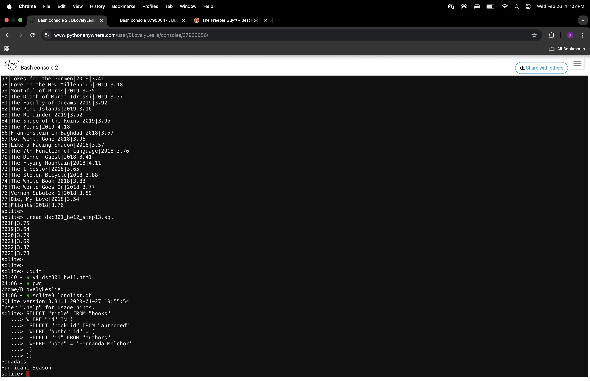
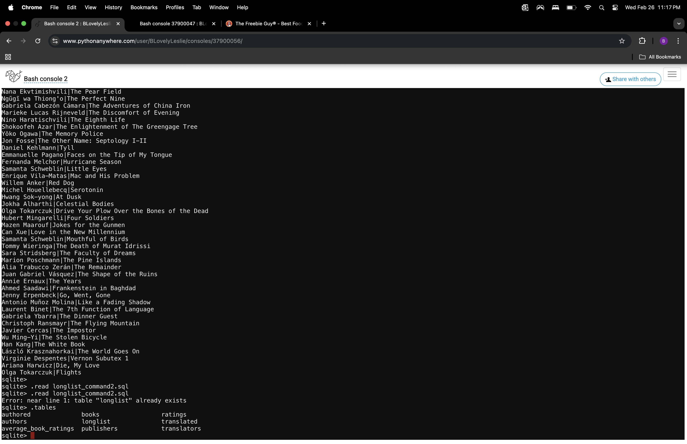

The code selects the books who were written by 'Fernanda Melchor', using their ID's as an identifying trait.
This script creates a new table called "longlist," that has the name of the auhtor, and there are two scripts using the "JOIN," command using foriegn keys to help maintain the strucuture of the newly created table
